케로케로케로피
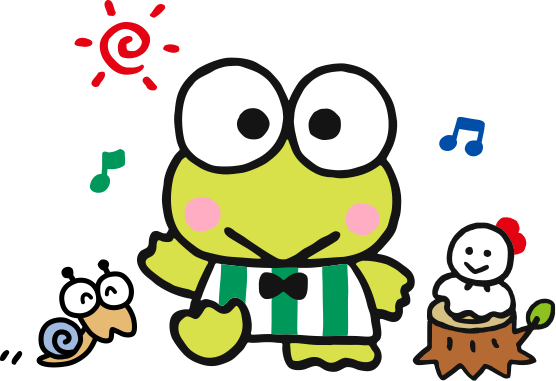
케로케로케로피는 모험을 좋아하며 활기찬 성격의 도넛 연못의 인기 스타예요! 노래를 잘 부르고, 개구리 수영은 잘 못하지만, 크롤 수영은 특기랍니다. 도너츠 연못의 케로케로하우스가 케로피의 집이랍니다.
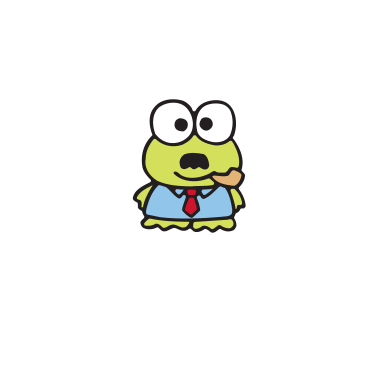
케로피의 아빠.
의사 선생님이며
낚시를 좋아합니다
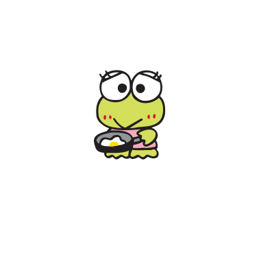
케로피의 엄마.
특기는 요리이고,
작은 레스토랑을 운영하고 있어요.
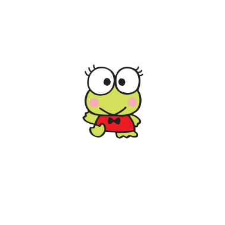
케로피의 누나.
나무를 오르는 것과
요리하는 것을 좋아해요.
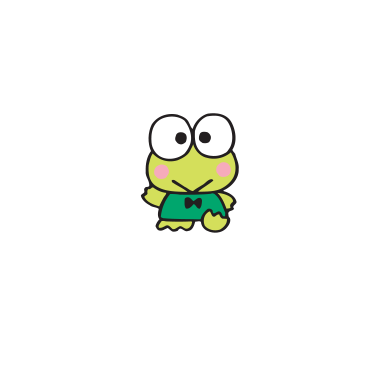
케로피의 남동생.
기계를 다루는 것과 노래하는 것을 좋아해요. 케로피와 똑같이 닮아서 종종 케로피로 오해를 받기도 해요.
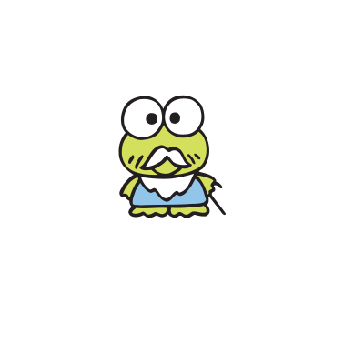
케로피의 할아버지
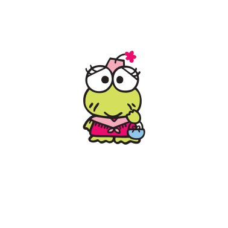
케로피의 할머니
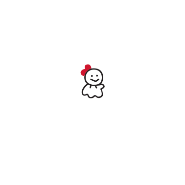
도넛 연못의 날씨를 예측할 수 있어요. 리본 모으기가 취미랍니다.
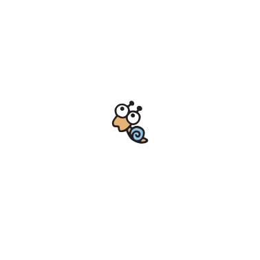
조용한 성격의 달팽이 친구.
혼자만의 작은 세계에서 멍하게 있는 것을 좋아해요.
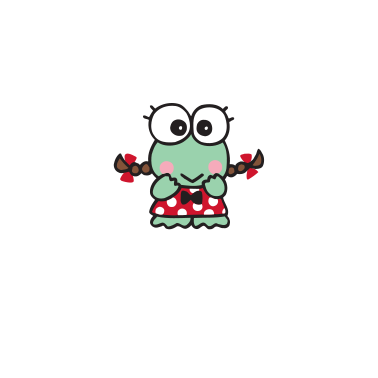
케로피의 여자친구.
꾸미는 것을 좋아하고 친절한 친구예요.
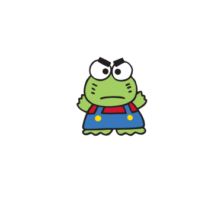
삼총사(케로피, 간타, 쿄로스케)의 리더로, 힘이 세고 장난치는 것을 좋아해요.
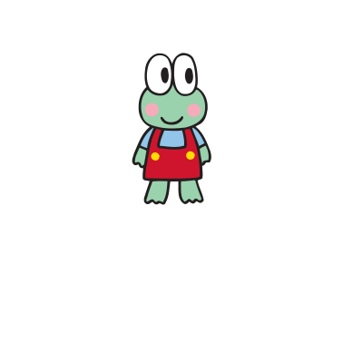
새로운 경험을 좋아하고 호기심이 가득한 친구예요. 도넛 연못에서 가장 시력이 좋고, 1km 앞까지 보여요.
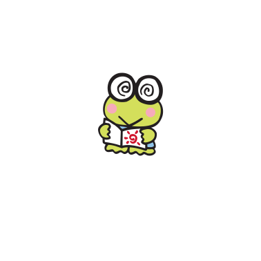
지식이 풍부하고 믿음직스러운 친구예요. 발명을 좋아하며 기상청에서 일하는 아빠처럼 날씨 박사가 되는 것이 꿈이에요.
케로피의 사촌. 케롯페의 엄마는 케로피의 이모랍니다. 취미는 낮잠자기와 도넛 연못 근처에서 산책하는 일이에요.
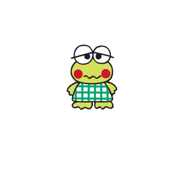
케로피의 사촌. 케롯페의 엄마는 케로피의 이모랍니다. 취미는 낮잠자기와 도넛 연못 근처에서 산책하는 일이에요.
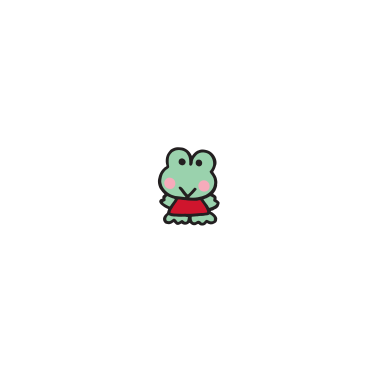
케로피의 사촌. 장난치는 것을 좋아하는 치피는 케로피와 함께 노는 것을 좋아해요.